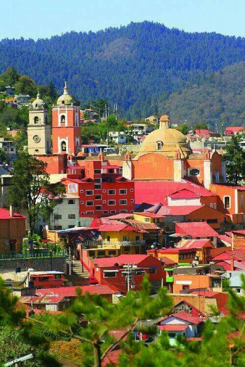

Formaciones rocosas únicas en el mundo, acompañadas por cascadas y un entorno natural ideal para fotos, paseos y contacto con la naturaleza. Perfecto para visitar en familia o pareja.
Real del Monte es conocido por sus pastes, un platillo típico con raíces inglesas. Además, podrás recorrer sus minas, calles empedradas y su famoso panteón inglés.
Huichapan es un Pueblo Mágico lleno de historia, con templos, acueductos y un ambiente tranquilo. Ideal para disfrutar de la cultura y la gastronomía tradicional hidalguense.